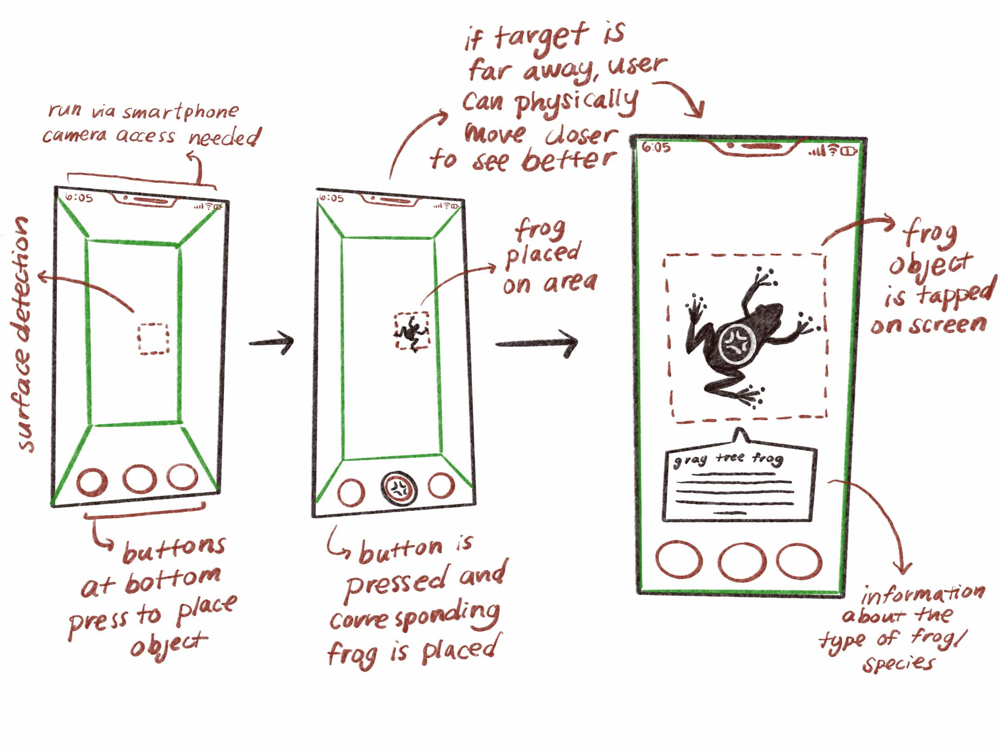

bailey foltz
bailey foltztree frogify
an opportunity to interact with various species of tree frogs in your everyday environment
AR app created using Reality Composer and Xcode
3D models created using Blender
[ 2022 ]
background :
This app was created as a final assignment for a New Realities class in 2020, for which the prompt was to create an AR app building on what we had learned throughout the semester. For this app, I decided to stick with a theme I had been somewhat consistent with throughout my AR work and in other projects: frogs.
Whlie tree frogs are generally understood to be common in rainforests and similar environments, they can actually be found on every continent except Antarctica, over 600 different species existing in South and Central America alone. About 30 species can be found in the United States. In my own experience exploring the woods of Connecticut, I see tree frogs much less than other types of pond-dwelling frogs, but this rarity always makes the experience more exciting.
I was interested in the use of AR to bring these frogs into one’s own environment, have the user be able to learn about the frogs they see, and generally create a fun interactive experience.
audience :
The main audience for this app would be younger users, or anyone who may be interested in tree frogs but does not have much prior knowledge about them.
• I was inspired by kids-focused initiatives by organizations like National Geographic and Nasa which introduce important or complicated concepts to younger crowds by focusing on more beginner-friendly information or presentation, often combined with easy-to-use digital interactivity. This allows the user to learn without being overwhelmed by information, and keeps them engaged via the requirement of their participation.
• Typically, this would take the form of an online game, but with an AR app I hoped to emphasize the connection of the tree frogs to the user’s own world.
• The app is intended to be a quick learning experience, average user interaction with my limited version projected to take 1-5 minutes.
process :
I began by planning out the user flow of my app, which I wanted to keep simple.
I chose three different species of tree frogs to begin with, all of which looked very different from each other, in order to emphasize the diversity of tree frog types. The models for this project were created in Blender. I wanted the models to be simple rather than realistic, so they appeared more as a character than as a literal frog.

I then brought these models into Xcode using Reality Composer to connect them. I compiled a short information blurb about each frog to appear when the frog is tapped, and cut audio snippets of each frog’s call from youtube videos to be triggered by the tapping of the frog as well, so the user could read the information and hear what the frog sounded like. The final app could be built out to a smartphone and was fully functional.
reiteration :
I revisited this project in 2022 with the intention of making some small adjustments to its visual components. My main goal was to remodel the frogs and interface to be more aligned with my original intentions.
I began by remodeling the frogs.
• I redid the frog models in Blender and textured them using Procreate, and in this revisitation was able to spend more time on each frog to make it look closer to what I had imagined.
• I also created two models of each frog with different poses in order to add variety to the frogs that were placed and have groups of frogs look a bit more natural. I adjusted the code to randomize which model of each frog is placed when the corresponding button is pressed.

I also adjusted the other aspects of the app, such as the instructional text, the buttons, and the information pop-ups.
• I was more intentional and consistent with my use of fonts and other features which helped to tie the aspects of the app together.
• I made sure the information was clear and easier to read, and made it feel slightly more “playful” for the younger audience by including slightly more color, different fonts, and rounded corners.
link to code